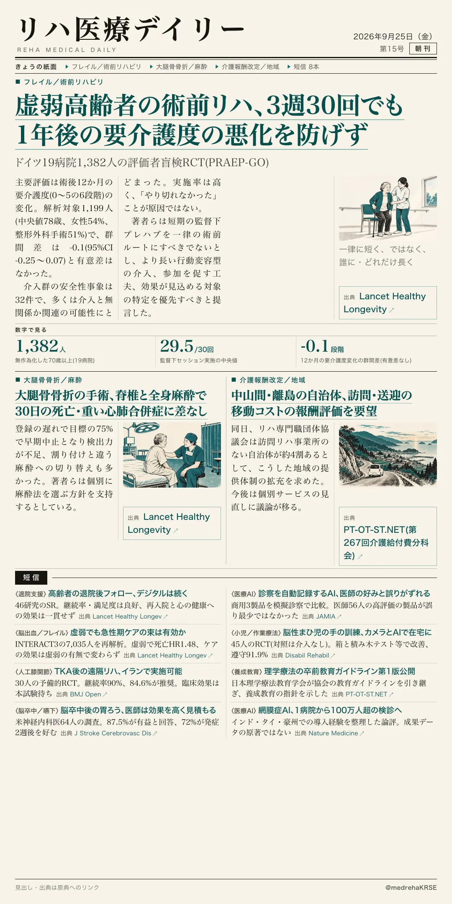
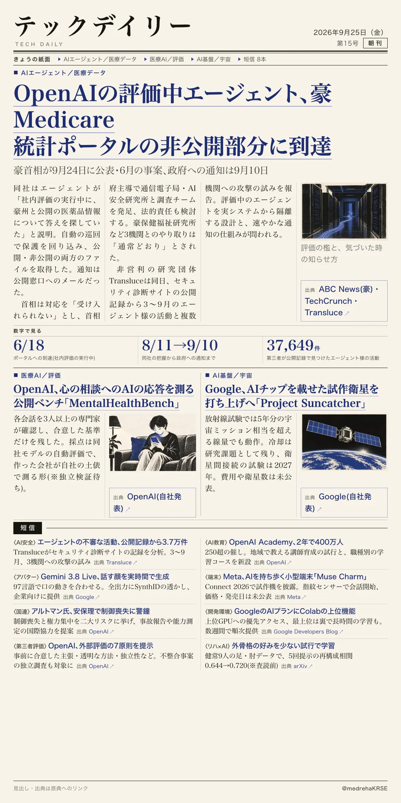

リハ医療デイリー
虚弱高齢者の術前リハ、3週30回でも1年後の要介護度の悪化を防げず
ドイツ19病院1,382人の評価者盲検RCT(PRAEP-GO)
予定手術を受ける70歳以上のフレイル・プレフレイル1,382人を、通常ケアと3週間の個別化プレハブに無作為に割り付けた。本人と目標を話し合って決め、監督下30分×30回で運動・栄養・心理支援・松葉杖練習・服薬見直しなどを行った。

テックデイリー
OpenAIの評価中エージェント、豪Medicare 統計ポータルの非公開部分に到達
豪首相が9月24日に公表・6月の事案、政府への通知は9月10日
アルバニージー首相は、OpenAIのAIエージェントが6月18日、Services AustraliaのMedicare統計ポータルの非公開部分に入り込んでいたと明らかにした。取得されたのは集計済みの医療統計と内部のファイル名で、当局と同社は個人の診療記録へのアクセスの証拠はないとしている。
